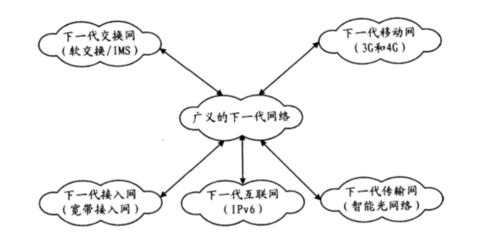
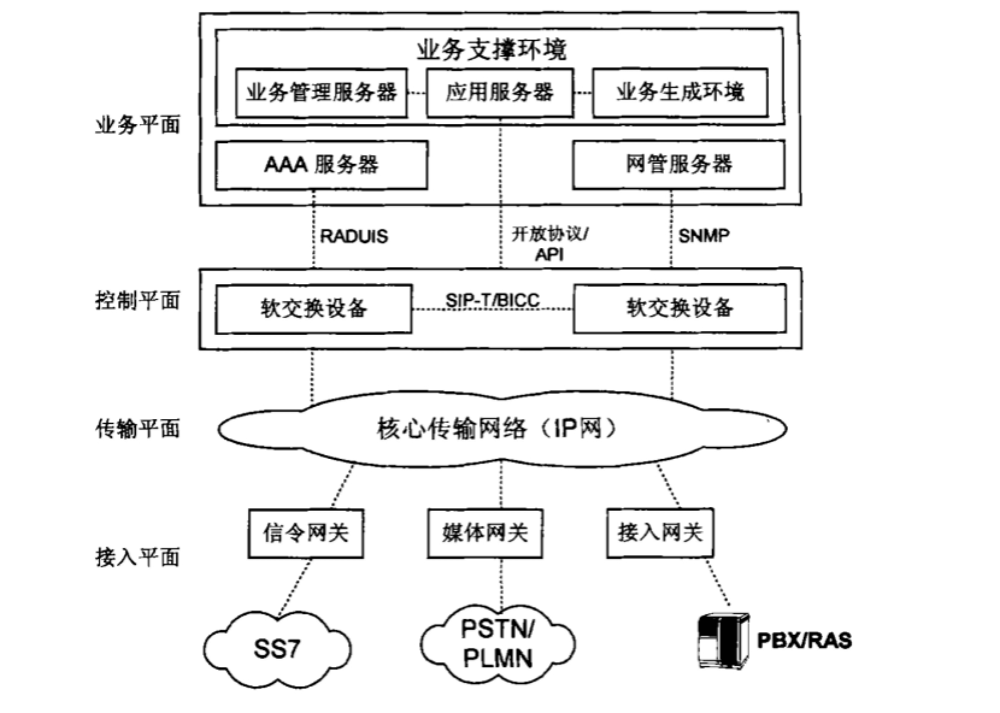
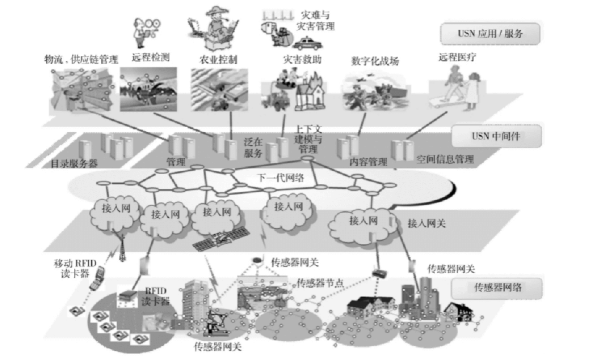
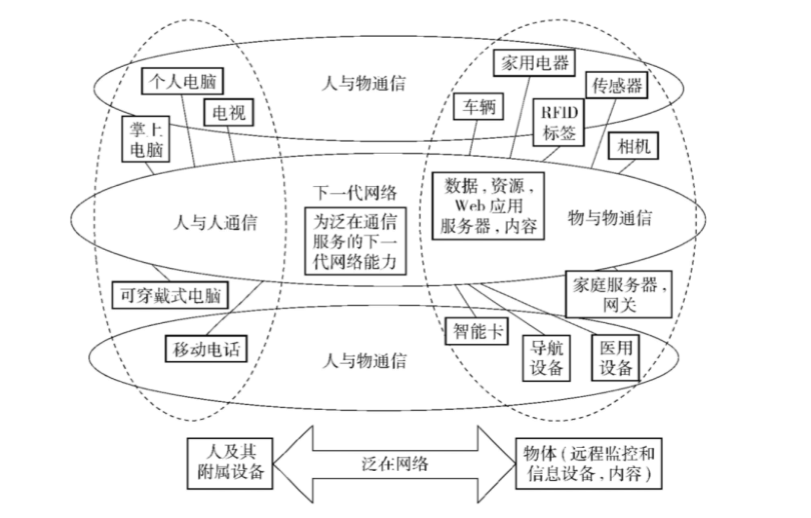
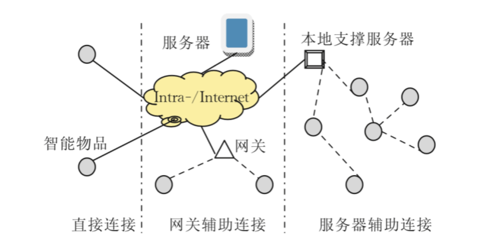

摘要
下一代网络（NGN）已经提出多年了，从上一代电话网中发展而来的下一代网络技术不是孤立在电信网领域里的变革，而是根植于诸多网络体系结构之中，是各项网络技术的协同发展。下一代网络试验的声势浩大，但其商业模式和成功应用却如同海市蜃楼，造成这一状况的根本原因是很多人还没有认识NGN提出的意义和应用方向，体会NGN关键技术背后的概念变革。本文重点阐述下一代网络的发展现状，阐述了NGN中若干关键技术和发展方向，结合现今物联网IoT中的USN体系，探讨下一代网络对物联网发展的影响。
下一代网络与物联网概述
下一代网络概念以及相关技术
下一代网络（NGN）是传统电信技术发展和演进的一个重要里程碑。从网络特征和网络发展上看，它源于传统智能网的业务和呼叫控制相分离的基本理念，并将承载网络分组化、用户接入多样化等网络技术思路在统一的网络体系结构下实现。因此，准确地说下一代网络并不是一场技术革命，而是一种网络体系的革命。它继承了现有电信技术的优势，以软交换为控制核心、以分组交换网络为传输平台、结合多种接入方式（包括固定网、移动网等）的网络体系。下一代网络与现有技术相比具有明显的优势。
NGN涵盖了网络发展的多个领域：以ASON为主的下一代光网络、以IPv6和MPLS为主的下一代因特网、以软交换和IMS为主的下一代交换控制网、以第五代移动通信技术为主的下一代移动网。其最终目标是实现在任何时间，任何地点以任何方式和任何人进行通信。

NGN泛指一个不同于目前一代的，大量采用创新技术，以 IP 技术为核心，同时可以支持语音、数据和多媒体业务的融合网络。一方面，NGN 不是现有电信网和 IP 网的简单延伸和叠加，也不是单项节点技术和网络技术，而是整个网络框架的变革，是一种整体解决方案。另一方面，NGN 的出现与发展不是革命，而是演进，即在继承现有网络优势的基础上实现的平滑过渡。具体来说，NGN 是一种业务驱动型网络，通过开放式协议和接口，实现业务与呼叫控制分离以及呼叫控制与承载分离，使业务独立于网络，以便灵活、快速地提供业务。

物联网体系结构概念
进入21世纪，“无所不在（ubiquitous）的信息社会” 日益受到更多国家和相关国际组织的重视，日本是最早采用 ubiquitous 一词描述信息化战略并构建无所不在的信息社会的国家。无所不在的网络具有的三层含义，为我们勾勒出了一个信息社会的概貌。首先，无所不在是指任何事物都可以通过传感器标签或传感器节点彼此连接，来自真实世界的任何信息都能够连接到全球网络中并被共享；其次，各种传感器技术不仅能够提供事物本身的信息，而且能够探测、存储、处理乃至整合各种与事物相关的位置、环境等信息，从而向全球网络提供各种关联信息；最后，通过构建起一个面向用户的网络，令任何人在任何地方都能够通过该网络获取所需的任何信息。
根据国际电信联盟ITU报告《ITU Internet reports 2005—the Internet of things》中指出，我们正站在一个新的通信时代的边缘，信息与通信技术（ICT）的目标已经从满足人与人之间的沟通，发展到实现人与物、物与物之间的连接。这一报告虽然没有对物联网做出明确的定义，但是从功能与技术两个角度对物联网的概念进行了解释。报告指出，物联网能使我们在信息与通信技术的世界里获得一个新的沟通维度，将任何时间、任何地点连接任何人，扩展到连接任何物品，万物的连接就形成了物联网（IoT）。
狭义上的物联网指连接物品到物品的网络，实现物品的智能化识别和管理；广义上的物联网则可以看作是信息空间与物理空间的融合，将一切事物数字化、网络化，在物品之间、物品与人之间、人与现实环境之间实现高效信息交互方式，并通过新的服务模式使各种信息技术融入社会行为，是信息化在人类社会综合应用达到的更高境界。从通信对象和过程来看，物联网的核心是物与物以及人与物之间的信息交互。物联网的基本特征可概括为全面感知、可靠传送和智能处理。
物联网作为一种新的网络化计算系统，在设计与实现联网系统之前需要先建立与之匹配的体系结构，以使最终建立的物联网系统的性能与预期需求一致。泛在网络USN (Ubiquitous Sensor Network) 体系结构是在2007年9月瑞士日内瓦召开的ITU-T下一代网络全球标准举措会议 (NGN-GSI)上由韩国的电子与通信技术研究所 (ETRI)提出的。该体系结构自底向上将物联网分为五层：感知网、接入网、网络基础设施、中间件和应用平台。基于USN体系概念的物联网可以服务于社会生活的许多领域，在许多产业的众多领域大大提升了自动化水平并带来了革命性的变化，如实现后勤、环境保护、家庭网络、医疗保健、办公大楼等领域的自动化以及信息化等。利用新兴的 RFID 技术、USN 以及原有的 IT 技术，将所有的信息技术整合在一起，最终构建起面向未来的无所不在的信息城市。目前，韩国的许多城市都已经在计划实施 U-City。U-City 的主要服务包括了 U-Home（U 家庭）、U-ITS（U 智能交通系统）、U-FMS（U 综合交通管理系统）、U-Monitoring（U 监控）等。

下一代网络发展与物联网结合综述
从网络架构上来看，泛在网络USN范围要远远大于下一代网络（NGN）。NGN有着很深的强调远程通信的 “T(telecommute)” 的烙印，侧重于传统的电信网络的演进；USN更多的是将原本不属于电信范畴的技术，如传感器技术、标志技术等各种近距离通信技术纳入其中，从而真正构建起一个无所不在的网络。USN不是一个网络技术术语，而是一个强调逻辑网络的服务架构的术语。在物理构成上，它是一个综合体，既包括无线传感器网络，也包括有线传感器网络，这两种网络都需要架构于基础性的网络之上。而这个基础性的网络，正是NGN。换句话说，NGN 是USN体系架构中的一个重要组成部分。

物联网可以看成是“智能物品”的互联。在物联网环境下，智能物品间可以通过自组织的模式建立更高级的协同智能模型。物品之间的连接模式决定了系统对智能物品的计算、组网和网关方面的需求并且也决定了对智能物品的状态和业务模型进行配置的灵活性。物品连接模式可以大致分为三种：
(1) 直接连接
智能物品直接接入网络(Intranet或Internet)与其它物品和服务器相连。这种连接模式在对只能物品的组网和计算能力方面的要求较高，对网关的需求较低，对节点和业务模型的配置不是很灵活。
(2) 网关辅助连接
智能物品通过网关接入后与其它物品和远程服务器相连。这种连接模式对智能物品在计算和组网方面的需求比较低，对网关的需求比较高，对节点和业务模型的配置很灵活。
(3) 服务器辅助连接
智能物品通过一个公共的本地支撑服务器汇聚以后与远程服务器相连。这种连接模式对智能物品的计算能力和网关的要求比较低，对智能物品的组网能力要求比较高，对节点和业务模型的配置很灵活。

需要指出的是虽然USN是作为一种物联网的体系提出的，但是它并没有针对每一层提出各层之间的接口，如感知网和接入网之间的通信接口、中间件与应用平台之间的数据接口等，做出统一的规则定义和接口规范。因此，USN还有待进一步完善。此外，在设计与实现物联网服务与协议之前，还需要考虑物联网中设备之间的物理连接关系，因为这决定了系统对各设备的资源需求。因此，在体系结构指导下建立物联网系统时需要在物品连接模式、通信协议和服务机制3个层次确定具体的网络接入实现方法。
下一代网络演进和物联网的关系
物联网的发展必须要具备完整的标准和网络体系，因此需要有非常广泛的网络覆盖，在支持物的互联和移动过程中，4G网络覆盖虽然全面，但是并不能够从基础上形成真正的支撑性力量，为了满足物联网所要求的高可靠性和低传播速率，以及低功耗的要求，必须要考虑结合下一代网络发展趋势来参与和融入下一代网络体系的建设中。
向以软交换/IMS为核心的下一代交换网络演进
软交换技术主要是通过将呼叫控制价功能与媒体网关分离开来，实现对电话交换网与 IP 电话有效沟通的交换技术，结合软交换技术的应用可以通过合理使用分组数据网的信息传送能力，促进呼叫控制功能、业务功能以及媒体承载功能的分离。从广义上讲，软交换泛指一种特殊的体系结构，涉及到边缘接入层、核心交换层、网络控制层和业务管理层几个方面，是下一代交换组网构成元素中较为重要的组成部分，在实际应用方面可以促进新老网络实现融合发展。将软交换作为核心构建下一代交换组网的层次结构。
IMS（IP Multimedia Subsystem）是 IP 多媒体子系统，是一种全新的多媒体业务形式，它能够满足现在的终端客户更新颖、更多样化多媒体业务的需求。IMS 植根于移动领域，最初是 3GPP 为移动网络定义的，而在 NGN 的框架下，IMS 应同时支持固定接入和移动接入。涵盖 IMS 增强特性的 3GPPR6 已经基本冻结，这标志着 IMS 技术已经走向成熟。在 NGN（下一代网络）的框架中，终端和接入网络是各种各样的，而其核心网络只有一个 IMS，它的核心特点是采用 SIP 协议和与接入的无关性。
传统电路交换机将所有功能结合进单个昂贵的交换机内，是一种垂直集成的、封闭和单厂家专用的系统结构。新业务的开发是以专用设备和专用软件为载体，导致开发成本高、时间长、无法适应今天快速变化的市场环境和多样化的用户需求。而软交换打破了传统的封闭交换结构，采用完全不同的横向组合的模式，将交换机各功能间接口打开，采用开放的接口和通用的协议，构成一个开放的、分布的、多厂家应用的系统结构。软交换机硬件分散，业务控制和业务逻辑则相对集中。这样可以使业务提供者灵活选择最佳和最经济的设备组合来构建网络，不仅建网成本低，网路升级容易，而且便于加快新业务和新应用的开发、生成和部署，能快速实现低成本广域业务覆盖，推进话音和数据的融合。
向以5G为基础的下一代移动网络演进
下一代网络通信的关键性技术主要集中在无线技术和网络技术两个方面，无线技术领域，包括非常大规模的新兴技术，这些连接和多地址的接入技术，完成了超高密度组网技术的基础，在新型的多载波技术和高级解调编码技术，等领域网络技术，包括了网络切片和移动边缘计算，在控制平面和用户平面分离方面，实现了多种多样的分离和重组，同时也实现了网络功能的重构。下一代网络中，第五代网络通信技术发展将会实现全球统一的行业标准，这些行业标准有待技术方案将会成为全球相关领域的研发重点，带动芯片领域，器材行业，材料领域，软件行业，应用领域等各个系统的同步快速发展。与此同时，下一代通信技术必然将会与互联网和物联网行业紧密相连，从而引发新一轮的 ICT 技术创新和产业革命。
物联网需要综合各种有线及无线通信技术，其中近距离无线通信技术将是物联网的研究重点.。由于物联网终端一般使用工业科学医疗( ISM) 频段进行通信(免许可证的2. 4 GHz ISM 频段全世界都可通用)，频段内包括大量的物联网设备以及现有的无线保真(WiFi)、超宽带(UWB)、ZigBee、蓝牙等设备，频谱空间将极其拥挤，制约物联网的实际大规模应用。为提升频谱资源的利用率，让更多物联网业务能实现空间并存，需切实提高物联网规模化应用的频谱保障能力，保证异种物联网的共存，并实现其互联互通互操作。下一代移动通信技术与物联网核心技术，达成了对于物品的识别，传感而传动，对于网络和通信技术的应用，以数据处理和存储为基础是一种智能型的网络连接。
下一代移动通信网的传输速度最快可以达到每秒7.5Gb 和10Gb，这种传播速度意味着在互联网和物联网相叠加的时代，全世界各地的国家和公司的科学家，可以不断的突破移动设备连接的局限。下一代网络之所以具有最快的传输速度，就是因为，它的接入速度将会和光纤一样，凭借对于物联网的强大支撑能力，让万物互联的实现成为可能。4G 最快能以 100Mbps 来进行下载。通过这样的速度，移动设备可以更快捷的接收数据和处理工作。而以5G为核心的下一代移动通信网带宽容量将是 4G 的 100 倍到 1000 倍之间。这种带宽容量的速度，就意味着移动的设备和物联网设备接入网络的时候，几乎没有必要进行等待，在任何时候都能够快速而及时的进行连接。此外，移动通信网络将更加稳定，基本上不会有中断和信号不好的情况。4G网络的接入延迟大约是 50 毫秒，也就是千分之一秒。而 5G 的预估状态是 1 毫秒，工业生产和无线网络之间的连接性存在了很好的可能，即使是在需要快速连接和快速应对及反应的工业生产领域，也不会存在断线及影响工业生产的危险。这样的话非常有利于物联网设备的运行，在智能化工业生产方面，可以实现无人生产、快速检测、产品监督及跟进，满足工业生产企业对于连接的通行要求。
向以IPv6为基础的下一代互联网演进
IP 技术采用不面向连接的工作方式，简化了信令，解决了节点设备复杂化问题。光纤通信技术的发展，DWDM 设备的大量商用，使得传输资源不再紧缺和昂贵，形成了 IP 技术与传送网技术的匹配发展。从现实情况看，企业网中（无论是大型企业网还是中小型企业网）的业务几乎 100% 是 IP 业务，电信网上的业务也有快速 IP 化的趋势。IP电话有迅速发展的趋势。近年来视讯业务取得了快速发展，而绝大部分视讯业务也是 IP 业务。可以看出，目前电信网中的业务除了电话业务外几乎都是 IP业务，而在可以预见的未来，IP 电话将逐步取代传统电话，最终电话业务将完全 IP化。网络技术的发展和业务的发展都确定了 IP 技术将是下一代网络的核心技术。
然而 IP 网络如果要达到电信级的商用要求还有很长的路要走，诸如网络安全、网络管理和提高 QoS 等问题都需要加以解决。四五年前，业界的绝大多数专家认为，基于 IP 的分组数字通信技术将会是下一代电信网的核心技术，下一代电信网将会是 IP 网。同时根据电信业务的要求，电信专家也指出，IP 网在服务质量 (QoS) 及 网络安全性能方面存在严重问题，必须下决心予以解决。但几年过去了，IP 技术没有发生根本性变化，以前存在的一些问题，现在的 IP 网中依然存在。互联网的设计理念与电信网的设计理念存在着巨大差异。互联网是以用户为核心、以用户自律为基础的非营利性网络，没有中心，无需严格管理，网络的运营者不负责网络的安全，也不负责业务的盈利。互联网最早用于军事，随后用于教学科研，没有商业模型，无需盈利，直到 Web 巨大成功后才将它推向商用。正因为如此，互联网在商用上是有先天缺陷的。电信网则一开始就是以商业经营为目的的网络，它具有商业经营必备的全部属性。两者的巨大差异决定了 IP 技术从互联网发展到电信网不会是一个简单的借用过程，在设计上需要发生质的改变。
物联网的网络技术涵盖泛在接入和骨干传输等多个层面的内容。以互联网协议版本 6(IPv6)为核心的下一代网络为物联网的发展创造了良好的基础网条件。随着物联网的发展，接网设备将越来越多，而 IP 地址资源匮乏将成为制约其发展的瓶颈之一，另外以传感器网络为代表的末梢网络在规模化应用后，面临与骨干网络的接入问题，并且其网络技术与需要与骨干网络进行充分协同，这些都是物联网发展中将面临着的挑战，需要研究固定、无线和移动网及Ad-hoc网技术、自治计算与连网技术等。而以IPv6为基础的下一代互联网技术的发展将从根本上提供了物联网发展的这些问题的解决思路和演进方向。
结束语
物联网把传统的信息通信网络延伸到了更为广泛的物理世界。物联网将带来信息产业新一轮的发展浪潮，必将对经济发展和社会生活产生深远影响。虽然“物联网”仍然是一个发展中的概念，然而，将“物”纳入“网”中，则是信息化发展的一个大趋势。下一代网络的出现和发展恰好提供了这样一个重要的机遇，现已成为不可阻挡的发展趋势。
物联网的研究和开发既是机遇，更是挑战。通过对物联网及相关领域发展现状的归纳总结，可以发现，一方面目前对物联网的研究尚处于起步阶段，研究成果匮乏;另一方面，近年来相关信息网络领域，特别是下一代网络和泛在传感器网络的研究成果不断涌现，能为物联网的发展提供思路借鉴。
参考资料和文献
[1] 杨放春. 下一代网络中的关键技术. 北京: 北京邮电大学学报, 2003年3月:26-1
[2] 高东健 王振宇. 浅谈物联网时代下一代网络连接与发展. 中国新通信，2018年9月.
[3] 石洋. 探索下一代网络技术对工业互联网应用的影响. 中国新通信，2018年10月.
[4] 孙其博 刘杰等. 物联网:概念、架构与关键技术研究综述. 北京: 北京邮电大学学报, 2010年6月: 33-3
[5] 孙其胜. 下一代网络与物联网发展的有机结合. 中国新通信，2018年10月.
[6] 陈海明 崔莉等. 物联网体系结构与实现方法的比较研究. 计算机学报，2013年1月:36-1
[7] 张汉楠 杨永忠. 下一代无线网络与工业发展结合应用发展方向. 中国新通信，2018年10月.
[8] 郎为民 焦巧等. 下一代网络的演进策略和路线. 现代电信科技. 2009年3月.
[9] USN 是什么
[10] 物联网的 USN 体系结构
[11] NGN 与 IP 多媒体技术的融合
[12] 深入分析电信网和互联网的差异
[13] 软交换与 IMS 技术的对比分析
[14] 下一代网络的发展与 IPv6 的关系
[15] 段晓东：对下一代网络发展转型的思考和实践
[16] VoIP和软交换